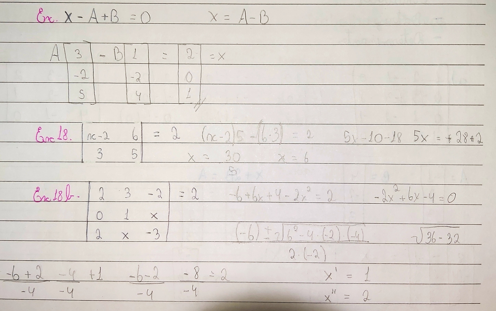
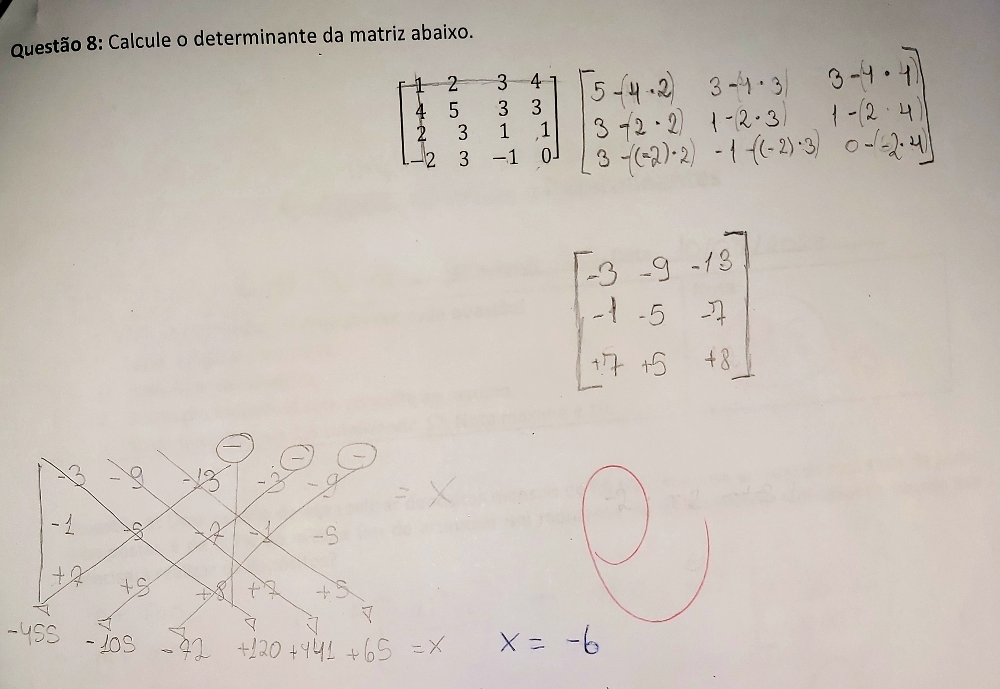

Equações Matriciais são equações com incógnitas dentro das matrizes. Operações com para descobrir as incógnitas presentes na matriz. Esses números podem ser no determinante, em alguma operação entre as matrizes, ou até mesmo em um dos elementos da matriz.
As resoluções podem ser, uma nova matriz. Ou talvez você tenha que calcular o determinante, usando a regra de sarrus, e igual a operação com valor do determinante dado, até isolar o x. Pode ser que tenho que usar bhaskara, quando há mais de uma incógnita na matriz.
 Questão 8 da prova: Anuidades, Matrizes e Determinantes, realizada pelos estudantes Germano Bertan e Vitória Aschidamini Dall’Agnol, aplicada pela professora Dra. VALÉRIA ESPÍNDOLA LESSA, na aula do dia 10/07/2024, para a turma de informática do segundo ano, de 2024, do IFRS, Campus Erechim, no componente curricular de Matemática II.